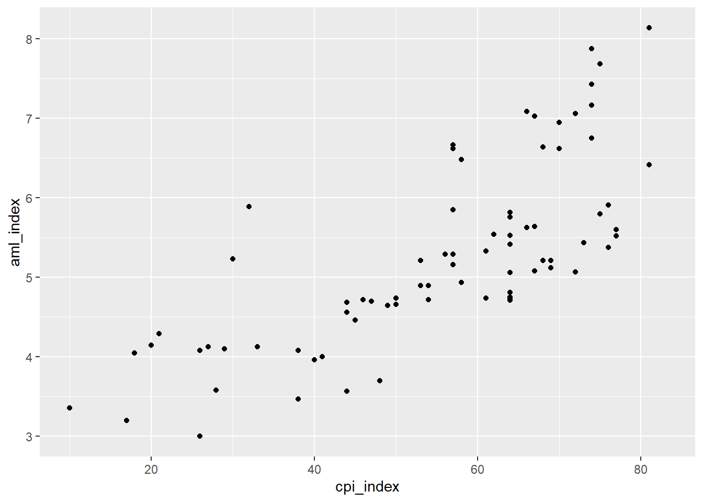

library(tidyverse)
library(readxl)
data <- read_xlsx("data/AML_2.xlsx")3 Exploración avanzada
3.1 Visualización de datos
La visualización de datos es un paso clave dentro del Análisis Exploratorio de Datos (EDA) en Machine Learning, porque nos permite ir más allá de los números y comprender de manera intuitiva la información con la que vamos a trabajar. A través de gráficos podemos detectar patrones, identificar tendencias, encontrar valores atípicos y comparar distribuciones de las variables, lo que facilita tomar decisiones sobre el preprocesamiento y la selección de características.
En este curso utilizaremos ggplot2, un paquete del ecosistema tidyverse que se ha convertido en un estándar para la visualización en R. Su fortaleza radica en la gramática de los gráficos, un enfoque que nos invita a construir visualizaciones combinando capas (datos, variables estéticas, geometrías, temas) de manera flexible y reproducible.
Para Machine Learning, esta herramienta es fundamental: nos ayuda a explorar relaciones entre variables predictoras y la variable objetivo, a observar cómo se distribuyen los datos y a detectar posibles problemas que, de no atenderse, afectarían el desempeño de nuestros modelos.
3.1.1 Retomamos nuestro dataset üìä
| Variable | Cómo debe leerse |
|---|---|
pais |
Nombre del país. Identificación de la unidad de análisis. |
continente |
Continente al que pertenece el país (ej. América, Europa, Asia). |
region |
Subregión geográfica más específica (ej. Sudamérica, África Occidental). |
aml_index |
Índice de Lavado de Activos según Basel AML Index. Valores más altos indican mayor riesgo de lavado de activos y financiamiento del terrorismo. |
matricula |
Porcentaje de la población en edad escolar que está matriculada en el sistema educativo. |
pbi_pc |
Producto Bruto Interno per cápita (ingreso promedio por persona en dólares). |
pobreza |
Nivel de pobreza en el país (porcentaje de la población bajo la línea de pobreza). |
urbano |
Porcentaje de la población que reside en áreas urbanas. |
educacion |
Porcentaje del PBI nacional destinado a educación. |
cpi_index |
Índice de Percepción de la Corrupción de Transparencia Internacional. Valores más altos significan menor percepción de corrupción. |
rule_of_law |
Índice de Estado de Derecho. Valores más altos indican mayor confianza en las leyes, justicia y cumplimiento normativo. |
democracy_index |
Índice de democracia (Economist Intelligence Unit). Valores más altos indican regímenes más democráticos. |
democracy_index_cat |
Categoría del índice de democracia (ej. Democracia plena, Democracia defectuosa, Régimen híbrido, Régimen autoritario). |
organized_crime_index |
Índice de criminalidad organizada. Valores más altos reflejan mayor presencia e influencia de organizaciones criminales. |
organized_crime_index_cat |
Categoría del índice de criminalidad organizada (ej. Baja, Media, Alta). |
Con la finalidad de que cpi_index tenga una intepretación intuitiva vamos a invertir su escala:
data <- data |> mutate(cpi_index=100-cpi_index)3.1.2 Anatomía de un ggplot
ggplot2 es un popular paquete de visualización de datos para el lenguaje de programación R, basado en los principios de la “Gramática de Gráficos”. Esta filosofía de diseño permite a los usuarios construir gráficos complejos y estéticamente agradables a partir de componentes básicos de forma intuitiva y flexible.
El núcleo de ggplot2 radica en su sistema de capas, donde cada gráfico se construye agregando capas que pueden incluir, entre otros, los datos, las estéticas (como color, forma y tamaño), los objetos geométricos (como puntos, líneas y barras), las escalas, y las anotaciones. Este enfoque modular no solo facilita la personalización y optimización de los gráficos sino que también promueve una estructura de código clara y comprensible.
Vamos a hacer un ejemplo paso a paso:
3.1.2.1 1ra capa: Datos
Es el conjunto de datos a visualizar.
Nuestra primera capa siempre va a ser la data. Sobre esta iniciamos la función ggplot y corroboramos que tenemos un lienzo en blanco.
data |>
ggplot()
3.1.2.2 2da capa: Estéticas
Es el diseño básico del gráfico (Aesthetics).
Mapeo de variables a propiedades visuales como color, forma o tamaño, definidas con aes().
A diferencia del lienzo en blanco, ya contamos con un diseño. En este caso, hemos indicado al R que el eje X será la variable Pobreza.
data |>
ggplot()+
aes(x=aml_index)
Advertencia
En ggplot2, las capas de un gráfico se van adicionando secuencialmente utilizando el operador +.
3.1.2.3 3ra capa: Geometrías (Geoms)
Son representaciones gráficas de los datos, como puntos, líneas o barras (geom_point(), geom_line(), geom_bar(), etc.).
En nuestro ejemplo, podemos agregar la geometría de puntos para hacer un scatterplot o diagrama de dispersión:
data |>
ggplot()+
aes(x=aml_index)+
geom_histogram()`stat_bin()` using `bins = 30`. Pick better value with `binwidth`.Warning: Removed 16 rows containing non-finite outside the scale range
(`stat_bin()`).
Nota
En el paquete {ggplot2} existen 30 geometrías disponibles. Puedes ver el detalle de estos en la documentación del paquete.
Esta estructura de capas hace que ggplot2 sea extremadamente útil para explorar y presentar datos de manera efectiva, permitiendo a los usuarios desde principiantes hasta expertos crear visualizaciones de datos complejas y personalizadas con relativa facilidad.
3.2 Exploración univariada: Target
La primera mirada debe dirigirse al target, la variable que queremos predecir. Revisar su distribución nos dice si los valores están concentrados en un rango estrecho o dispersos, si hay sesgos o valores extremos que podrían distorsionar los resultados. Detectar estos patrones desde el inicio nos prepara para tomar decisiones informadas más adelante en el preprocesamiento.
3.2.1 Histogramas
En este caso, nuestra variable target es el AML Index, por ello, podríamos comenzar con un histograma.
Este primer gráfico nos informa sobre la distribución de la variable. Dicho de otra manera, describe con qué frecuencia aparecen ciertos valores o rangos de valores.
data |>
ggplot()+
aes(x=aml_index)+
geom_histogram()`stat_bin()` using `bins = 30`. Pick better value with `binwidth`.Warning: Removed 16 rows containing non-finite outside the scale range
(`stat_bin()`).
Tip
Guíate con estas preguntas básicas:
¿Qué forma tiene la distribución? (simétrica como campana, se nota una cola a la derecha o izquierda, con varias “montañas” o unimodal).
¿Hay valores extremos que aparecen en los bordes?
3.2.2 Boxplots
Luego de tener una idea sobre la forma cómo se distribuye la variable, podríamos entrar a analizar su dispersión. La dispersión es indica qué tan extendidos o agrupados están los datos alrededor de un punto central (la media o la mediana). Si bien ya podemos tener una idea de ello viendo un histograma, siempre es útil utilizar un boxplot.
El boxplot es un gráfico estadístico que resume la información esencial de una variable numérica en un solo esquema. Se construye a partir de los cuartiles. Estos son medidas que dividen el conjunto de datos en partes ordenadas:
Primer cuartil (Q1): el valor por debajo del cual se encuentra el 25% de los datos.
Segundo cuartil (Q2): es la mediana (50%).
Tercer cuartil (Q3): el valor por debajo del cual se encuentra el 75% de los datos.
La caja representa el rango intercuartílico (Q3 – Q1), que concentra al 50% central de los datos. La línea dentro de la caja marca la mediana. Los bigotes se extienden hasta los valores que aún se consideran normales, y los puntos fuera de ellos son los outliers.
data |>
ggplot()+
aes(y=aml_index)+ #Para que aparezca vertical
geom_boxplot()Warning: Removed 16 rows containing non-finite outside the scale range
(`stat_boxplot()`).
Tip
Guíate con estas preguntas básicas:
Mediana: ¿está en el centro o hacia un lado de la caja? → indica simetría o sesgo.
Caja (Q1–Q3): ¿es ancha o angosta? → muestra la variabilidad del 50% central.
Bigotes: ¿son largos o cortos? ¿más extendidos en un lado? → refleja dispersión y asimetría.
Outliers: ¿hay puntos fuera de los bigotes? ¿cuántos y qué tan alejados?
Si no lo tienes claro, te aconsejo que revisites los conceptos de media, mediana y moda como medidas de tendencia central. Su importancia radica en que simplifican el análisis de grandes volúmenes de información, proporcionando un único valor representativo que ayuda a entender la naturaleza de los datos.
3.2.3 Ejercicio en clase
Dibujemos un boxplot desde 0.
3.3 Exploración univariada: Predictoras
Analizar las distribuciones de los predictores de manera individual nos permite descubrir escalas muy diferentes, valores atípicos o categorías poco representadas. Esta revisión inicial es clave para comprender la calidad y naturaleza de los insumos que alimentarán el modelo.
3.3.1 Gráfico de barras
Comencemos con una variable categórica como continente. Antes habíamos visto frecuencias utilizando summary() o count():
data |>
count(continente)# A tibble: 5 × 2
continente n
<chr> <int>
1 Africa 29
2 Americas 20
3 Asia 17
4 Europe 26
5 Oceania 3Ahora podemos también solicitar un gráfico de barras:
data |>
ggplot()+
aes(x=continente)+
geom_bar()O también puedes utilizar una extensión de ggplot como ggchart:
#install.packages("ggcharts")
library(ggcharts)Y solicitamos un diagrama similar, pero con una mejor presentación:
data |>
bar_chart(x=continente)+
geom_text(aes(label = n, hjust = "left"))
Tip
Guíate con estas preguntas básicas:
¿Existen categorías con muy pocas observaciones?
Cuando una categoría tiene muy pocas observaciones, puede causar problemas en el modelado (coeficientes inestables en regresión, riesgo de sobreajuste en árboles o dummies casi vacías).
3.3.2 Ejercicio en clase
Ya exploramos visualmente la variable target y también una predictora, ahora genera tus propios gráficos para:
matricula
pbi_pc
pobreza
educacion
democracy_index_cat
organized_crime_index_cat
3.4 Exploración multivariada
Cuando avanzamos a exploración multivariada nuestro propósito debe ser analizar las interacciones entre las variables y analizar si encontramos alguna asociación.
Esto es importante porque nuestro algoritmo de ML, sea un modelo tradicional o más avanzado (deep learning) va a utilizar esas interacciones para realizar las predicciones.
Aquí hay una norma: si los predictores son malos, el modelo será malo.
3.4.1 Gráfico de dispersión
Se utiliza para ver la relación entre dos variables numéricas. Aquí debemos recordar conceptos básicos como el plano cartesiano, el cual es un sistema de coordenadas que se utiliza para representar y visualizar puntos en un espacio bidimensional.
Está compuesto por dos ejes perpendiculares, el eje horizontal o eje de las abscisas (X) y el eje vertical o eje de las ordenadas (Y).
Estos ejes se cruzan en un punto llamado origen, que se representa con las coordenadas (0,0). Cada punto en el plano cartesiano se representa mediante un par ordenado (x, y), donde “x” indica la posición horizontal del punto a lo largo del eje X y “y” indica la posición vertical del punto a lo largo del eje Y.
El plano cartesiano proporciona un marco de referencia visual que facilita la representación gráfica de datos, funciones matemáticas, relaciones y patrones geométricos, permitiendo el análisis y la interpretación de información en el contexto bidimensional.
data |>
ggplot()+
aes(x=cpi_index, y=aml_index)+
geom_point()Warning: Removed 18 rows containing missing values or values outside the scale range
(`geom_point()`).
Tip
Guíate con estas preguntas básicas:
¿Los puntos que vemos en el plano forman alguna figura como una línea? Mientras la línea sea más clara, diremos que la relación lineal será alta En cambio si vemos una línea difícilmente, o simplemente una gran nube de puntos, podríamos decir que la relación lineal es baja.
¿Una variable aumenta mientras la otra aumenta? Estamos frente a una relación positiva o directa.
¿Una variable aumenta mientras la otra disminuye? Estamos frente a una relación negativa o indirecta.
Ojo, puede mostrar también una relación no lineal.
3.4.2 Extra: Coeficiente de correlación
Una medida que suele solicitarse junto con el gráfico de dispersión, es el coeficiente de correlación. La correlación es una medida que describe la relación o asociación entre dos variables numéricas.
El coeficiente de correlación de Pearson indica la fuerza y la dirección de la relación lineal entre las variables y se mide a través de un coeficiente denominado coeficiente de correlación de Pearson.
El coeficiente puede tomar los valores en el rango de -1 a 1.
Solicitemos el coeficiente de correlación entre aml_index y cpi_index
cor.test(data$aml_index, data$cpi_index)
Pearson's product-moment correlation
data: data$aml_index and data$cpi_index
t = 9.7102, df = 75, p-value = 6.715e-15
alternative hypothesis: true correlation is not equal to 0
95 percent confidence interval:
0.6271554 0.8313204
sample estimates:
cor
0.7463016
Tip
Guíate con estas preguntas básicas:
FUERZA: Mientras el valor del coeficiente se aleje más del 0 (sea más grande como valor absoluto) ello indicará una mayor correlación entre las dos variables numéricas.
DIRECCIÓN: Cuando el coeficiente tiene signo positivo, ello indicará que la relación tiene sentido directo, es decir, mientras una variable aumenta, la otra aumenta. Si el signo es negativo, mientras una variable aumenta la otra disminuye.
También puedes utilizar la siguiente escala referencial para guiar tu interpretación:

Esto es importante para algunos algoritmos que suponen linealidad, como el caso de la Regresión Lineal.
3.4.3 Ejercicio en clase
Crea los gráficos de dispersión y calcula los coeficientes de correlación que se obtiene del cruce de nuestra variable target (aml_index) y las predictoras:
matricula
pbi_pc
pobreza
urbano
educación
rule_of_law
democracy_index
organized_crime_index
3.4.4 Gráfico + Coeficiente
library(corrplot)corrplot 0.95 loadedsolo_numericas <- data |> select(where(is.numeric))
corrplot(cor(solo_numericas,
use = "complete.obs"),
method="number",
type="lower",
tl.cex=0.8,
number.digits = 1)3.5 Valores perdidos
En la clase anterior ya te había comentado sobre la importancia de detectar los NA o también conocido como valores perdidos. Estos los podemos visualizar variable por variable utilizando la función summary() o también podemos utilizar otros paquetes como skimr:
#install.packages("skimr")
library(skimr)Para una rápida exploración podría utilizar la librería skimr:
skim(data)| Name | data |
| Number of rows | 95 |
| Number of columns | 15 |
| _______________________ | |
| Column type frequency: | |
| character | 5 |
| numeric | 10 |
| ________________________ | |
| Group variables | None |
Variable type: character
| skim_variable | n_missing | complete_rate | min | max | empty | n_unique | whitespace |
|---|---|---|---|---|---|---|---|
| pais | 0 | 1.00 | 4 | 24 | 0 | 95 | 0 |
| continente | 0 | 1.00 | 4 | 8 | 0 | 5 | 0 |
| region | 0 | 1.00 | 9 | 29 | 0 | 18 | 0 |
| democracy_index_cat | 5 | 0.95 | 13 | 16 | 0 | 4 | 0 |
| organized_crime_index_cat | 0 | 1.00 | 4 | 5 | 0 | 3 | 0 |
Variable type: numeric
| skim_variable | n_missing | complete_rate | mean | sd | p0 | p25 | p50 | p75 | p100 | hist |
|---|---|---|---|---|---|---|---|---|---|---|
| aml_index | 16 | 0.83 | 5.26 | 1.15 | 3.00 | 4.61 | 5.16 | 5.84 | 8.14 | ▂▇▇▃▂ |
| matricula | 0 | 1.00 | 67.81 | 25.85 | 11.29 | 43.78 | 77.47 | 90.06 | 99.84 | ▁▃▂▃▇ |
| pbi_pc | 0 | 1.00 | 11823.83 | 16615.00 | 293.96 | 1544.74 | 4900.76 | 15059.01 | 82708.51 | ▇▁▁▁▁ |
| pobreza | 0 | 1.00 | 27.93 | 16.84 | 2.60 | 15.05 | 23.40 | 36.80 | 72.30 | ▆▇▃▃▂ |
| urbano | 0 | 1.00 | 57.00 | 22.28 | 13.30 | 41.05 | 57.60 | 75.90 | 98.10 | ▅▅▇▇▃ |
| educacion | 0 | 1.00 | 4.43 | 1.36 | 1.11 | 3.59 | 4.56 | 5.26 | 7.67 | ▁▅▇▅▂ |
| cpi_index | 3 | 0.97 | 57.32 | 17.20 | 10.00 | 47.75 | 62.00 | 70.00 | 83.00 | ▁▂▃▇▆ |
| rule_of_law | 16 | 0.83 | 0.55 | 0.14 | 0.32 | 0.45 | 0.50 | 0.63 | 0.90 | ▃▇▃▂▂ |
| democracy_index | 5 | 0.95 | 5.59 | 2.15 | 0.32 | 3.79 | 5.94 | 7.11 | 9.39 | ▂▅▅▇▅ |
| organized_crime_index | 0 | 1.00 | 5.35 | 1.05 | 2.82 | 4.58 | 5.35 | 5.95 | 7.75 | ▁▅▇▅▂ |
En este caso también podemos visualizar los valores perdidos de nuestra base de datos a fin de poder tener una imagen de lo que nos estamos enfrentando y luego evaluar, durante el preprocesamiento, qué estrategia será la más adecuada para solucionarlos.
#install.packages("naniar")
library(naniar)El gráfico vis_miss() nos muestra la presencia de valores faltantes en cada variable. Cada columna representa una variable del dataset, y cada fila corresponde a una observación. Las celdas grises indican datos presentes y las celdas negras indican datos faltantes (NA). En la parte superior aparece el porcentaje de NA en cada variable. Para interpretarlo, debemos fijarnos en: (1) qué variables tienen más valores faltantes, (2) si los NA están distribuidos aleatoriamente o concentrados en ciertos casos, y (3) qué tan grande es el porcentaje total de NA. Esta información nos ayuda a decidir en el preprocesamiento si imputamos, eliminamos casos o descartamos variables.
data |>
vis_miss()
Tip
Guíate con estos criterios. Nos importa analizar por variable.
Porcentaje BAJO (<5%):Puedes eliminar esas filas sin perder mucha información o imputar.
Porcentaje MEDIO (5-20%): Conviene imputar.
Porcentaje ALTO (>30%): Esa variable podría ser candidata a eliminarse, salvo que tenga relevancia en el análisis.
3.6 Diagnóstico final de nuestro dataset
Para nuestra data podemos construir el siguiente reporte con cada uno de los pasos que dimos hasta el momento.
| Criterio | Diagnóstico |
|---|---|
| Predictoras categóricas | Sí, se identifican factores → requieren codificación |
| Valores perdidos | Pocos NA en general → viable imputar (mediana/moda) o eliminar casos puntuales. |
| Outliers | Variables como pbi_pc tienen valores extremos → revisar si son errores o reales; aplicar transformaciones si corresponde. |
| Sesgo | Distribuciones sesgadas (ej. pbi_pc) → aplicar transformaciones, si corresponde. |
| Escalas diferentes | Variables en distintas unidades (ej. miles vs %) → aplicar transformaciones. |